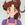

|

Bean Bandit
Author of 6 Stories |
Note: The characters in this story don't belong to me. They belong to other people, and I am perverting them for my own use. And by other people, I mean corporations with lots of money. Way more than I'll ever have. So no lawsuits, ok?
Also, big thanks to Deep Quote, who helped me through the worst of my writer's block. Your suggestions were excellent, even though I may have followed them imperfectly. Arigato!
No Need for Life Stories
"…I'm Ranma Saotome," The little redhead said miserably. Tenchi blinked. Obviously, his first impulse had been to scoff. Well, his first coherent one, anyway. But when he thought about it, he lived in the same house as a space pirate, a Juraian princess (Two, in fact), and a supergenius, among others. Was it really so far fetched?
"Well…Why don't you explain this…" He began slowly.
"Curse," The girl, who claimed to be his cousin, interrupted. He shrugged and nodded.
"…Curse, to us?" he suggested. Ranma blinked. She hadn't expected her cousin to be such a laid back guy. Ryoko turned to Tenchi in amazement.
"You actually believe this…this hussy?" she asked incredulously. Ayeka nodded, a rare moment of agreement between the two. Tenchi shrugged.
"Well, I didn't at first," he admitted, "But it's far from the strangest thing that's happened around here. It could be possible," he said. Ayeka frowned.
"Lord Tenchi, I find such a wild story highly unlikely. More likely she is an assassin of some sort with shapeshifting ability!" Tenchi looked at the purple haired princess in amazement.
"Ayeka…that sounds even less likely than her…I mean, his story. Let's hear him out, what harm could it do? You're both here to protect me, right?" He smiled lopsidedly at them. Ryoko and Ayeka gave a token grimace, but powered down their weapons and resumed their seats, mollified. Ranma went over to Sasami and Mihoshi, who was responsible for her current feminine state, and helped them to their feet.
"Um…Sasami…Could you go get me three cups of water? Two hot and one cold?" She asked the little blue haired girl uneasily. Sasami smiled sympathetically. She was a little uncomfortable with the new face, but an inner voice, belonging to someone she trusted absolutely, compelled her to relax.
"Sure," she replied brightly, and promptly did as she was asked.
Ranma accepted the proffered glasses from Sasami and waited until the entire household had seated themselves.
"Ah, Ok, Look…," she began uneasily, "I'll give ya the short version first. This body," She said, gesturing at her breasts, "Is a curse. This one is the way I really look," With that, she picked up one of the glasses of hot water and promptly upended it over her own head. The effect was just as stunning as the reverse had been. The petite, bosomy girl gained a good deal of mass and size, soft curves being replaced by lean, angular muscles. Ryoko and Ayeka's eyes were roughly the size of dinner plates, and Tenchi had to rub his eyes to make sure he had really seen what he'd thought he'd seen. Ryoko was the first to regain her wits.
"So are you really a boy or a girl?" she asked. Ranma winced visibly. Why does EVERYONE ask that? Gritting his teeth, he stifled the shout he'd wanted to give, and was about to answer, when Washu spoke.
"Male," she offered brightly, not looking up, smiling at her astral computer in satisfaction. Everyone looked mildly disconcerted at the…less than Washu-like way she was behaving. Ranma, simply stunned, blinked.
"uh…yeah, I am. How'd ya know?" he asked, smiling a little at the girl, or maybe lady, who had been really nice to him since he'd woken up. Washu shrugged.
"I scanned you with my computer. Men and women use their brains differently, and your brain is active in all the wrong places for a female. Add that to your body language and male speech patterns, and it suggests that you are a male, modified to look female," She explained. Ranma blinked again. He had understood most of that, and braced himself for the inevitable explosions of 'PERVERT!' that usually followed this discovery, but, judging by the simple accepting nods going around the table, the pleasant realization dawned on him. He wasn't going to have to prove he wasn't some kind of effeminate lecher! They believed him! The thought made him a little giddy.
Tenchi looked at Ranma, a frown of concern on his face.
"Are you all right?" He asked. Ranma blinked out of his amazed glee.
"Ah, sorry," Ranma replied sheepishly. "That was the first time I didn't have ta defend myself after people see the curse. I'm used ta people calling me a pervert an' stuff," Tenchi blinked. How could any rational person blame the curse on Ranma, especially after seeing how miserable it made him? He wanted to ask a question to that effect, but Washu interrupted.
"Unbelievable!" She exclaimed, staring at her computer. She looked up at Ranma, her natural curiosity overcoming her nervousness at speaking to him,
"How did this happen?" she asked, her emerald eyes alight with slightly crazed curiosity. While everyone else was relieved at the sudden return to familiar territory, (at least to them)Ranma tensed.
"I really wish you hadn't asked that," he said, bigsweating. "Well, it's like this…,"
Ranma wound up his (tragic) tale of the ill-fated training trip to Jusenkyo, then added some of his recent time at the Tendo's, detailing how hard the curse had made his life, along with his father. After he was finished, he looked up at the assembled family. He had the entire room spellbound. Tenchi stared at him, looking appalled, and yet sympathetic. Jeez, he thought, And I thought my life was tough!
Ryoko looked torn between wanting to burst into laughter, and sheer shocked amazement. I guess there are worse parents than Washu, she mused.
Ayeka was merely angry. Yosho was absolutely right to oppose that fool's marriage to Lady Nodoka. How dare a member of the Royal family be subjected to such abuse!
Sasami's heart went out to her new friend. Ranma-san was good enough to save her from that attack she'd wandered into, and she could tell Tsunami liked him. She'd try hard to make him feel welcome.
Yosho watched his recently discovered grandson as pride mingled with pity. He has endured much, Yosho reflected, thinking back to the letter his daughter had sent him, And yet, his fighting spirit is strong. He is a credit to Nodoka, even if the fool has raised him. And, if I am not mistaken, he possesses a power of Jurai as well. The coming times will be interesting indeed, The Juraian prince thought to himself.
Mihoshi blinked repeatedly, as she was unsure of how to react. The story was funny, but sad as well. Well, she'd listen more before she decided what to do.
Washu, for her part, had begun to look angry halfway through the story, and had only grown angrier as it progressed. She knew she wasn't a great parent, but this…this person who had raised Ranma had better watch out if he ever met up with the cutest genius scientist in the universe. She instantly thought of several experiments that she would definitely like to try on this Genma person. She chuckled mentally. Slow, painful experiments. No one, but no one could be allowed to get away with that. Are you sure this has nothing to do with his resemblance to you know who? Or the fact that he stirred up the urge to play naughty nurse, like you did with Tenchi? A small voice in the corner of her mind asked. This has nothing to do with Tenchi! She protested. Her inner voice smiled. That wasn't what I asked…. Washu looked up at Ranma and colored slightly. …maybe… she admitted to herself.
Confronted with several moments of silence, Ranma began to fidget nervously. As each member of the Masaki home was pondering what they had just been told, the smallest member, the sentient space ship known as Ryo-Ohki, hopped cheerfully into the living room. She had been out in the fields since the family had brought the man who had been fighting with her mistress home, and she could feel strange emotions along her mental link with Mistress Ryoko. She looked around and saw Ryoko, along with everyone else who lived in the house staring at the man who had been fighting earlier. There didn't seem to be any of the free floating anger from Ryoko that usually signaled the beginning of a brawl, but he had definitely managed to surprise her mistress somehow. She bounded curiously over to the newcomer. He didn't seem to notice her, so she sniffed him carefully. She couldn't figure out why he was so interesting. Perhaps he had carrots! Grabbing his pants leg in her mouth, she tugged gently, getting his attention, he looked down at her and seemed to tense up, for reasons she couldn't fathom. She let out a questioning "Miya?"
After that, everything went to straight to hell.
Everyone in the living room sprang up as Ranma let out a terrified yell. In a blur of motion, the martial artist was in a corner of the room, eyes as wide as dinner plates. Sasami was the first to move. She scooped up Ryo-Ohki in her arms, and turned to Ranma.
"What's wrong, Ranma-san?" asked a concerned Sasami, clutching the cabbit to her chest protectively. She was surprised. Ranma had seemed impossibly big and strong while he was carrying her in the hurricane, but now he was pressed into a corner, huddled as close to the wall as he could, shaking like a leaf.
Tenchi, had immediately sensed something was wrong, and If wasn't mistaken, Ryo-Ohki had something to do with it. He moved and interposed himself between Ranma and Sasami.
"Are you ok? What's wrong?" Tenchi asked. Ranma stuttered a moment, then finally managed to get out,
"C-C-cat!" he managed, pointing a Ryo-Ohki. Ryoko blinked, and got up to stand beside Tenchi.
"Cat? That isn't a cat!" she protested. Ranma eyed her, disbelieving, as he seemingly tried to push himself through the wall of the Masaki home. Washu looked on with horrified interest. When she had first come to stay on Earth, for a little light reading, she had devoured several thick psychology textbooks. The type of fear Ranma was displaying was beginning to alarm her.
"Ranma, what's wrong?" Mihoshi asked worriedly from beside Washu. She was beginning to get her 'frowny-face', and when the blonde was worried, that expression inevitably led to a crying jag.
"This can't be good," Washu muttered under her breath, not noticing Mihoshi in the slightest. As the red-haired scientist continued mumbling, Mihoshi made out a few words, 'associative phobia', and 'extreme trauma' but she didn't really understand so Mihoshi simply went back to watching the tense scene before her.
"He's scared of a cat? Are they usually frightening?" Ryoko asked as she floated above the table and watched Ranma moved away from Sasami, edging along the wall.
Tenchi turned away from Ranma for a moment.
"No. Ryo-Ohki sort of looks like one, in fact they're pretty small and harmless. I've never seen anyone react this way to a cat," he said worriedly, then he turned his attention back to Ranma, only to note with dismay that Ryo-Ohki had wiggled out of Sasami's arms and hopped toward his cousin, head cocked curiously.
"Miya?"
"AUUUGGHHH!" Ranma scrabbled against the wall and continued to scan the surroundings, looking for an escape, any escape. Sasami, looking troubled, dashed forward and picked up the sentient spaceship again, and retreated to what she deemed a safe distance. Yosho, who had simply watched until that point, pushed his glasses further up the bridge of his nose. "Perhaps Ryo-Ohki should change forms for now," he suggested.
"Ok, Grandpa." Sasami looked relieved at the suggestion. "Can you change, Ryo-Ohki? You make Ranma-san nervous like this," she told her furry friend gently. Ryo-Ohki seemed delighted to find a way out of the dilemma. With a 'blip' the small animal was gone, replaced by the larger, slightly furry form of a five to six year old girl, wearing a light pink dress emblazoned with a large carrot.
"Miya, miya." Sasami glanced over at Tenchi's cousin, noting he seemed to relax almost instantly, though he still tensed visibly when Ryo-Ohki mewed. She leaned down and whispered in the smaller girl's ear.
"Maybe you shouldn't do that, either. At least until Ranma-san gets used to you," she advised. The little cabbit-girl nodded seriously.
"Kaw-wot?" she asked. Sasami giggled in spite of herself, feeling some of the tension of this new situation drain away.
"I think you can say that," she told Ryo-Ohki, her large eyes dancing with mirth.
Sasami and Ryo-Ohki rejoined the others, and watched as Ranma calmed down when the 'cat' was out of sight. After a few more minutes, he regained his control, took a seat at the table, and bowed his head.
"Kuso. I really didn't wanna…Ah, man. I'm sorry 'bout this." He mumbled, shooting the newly humanoid Ryo-Ohki an interested look, wondering faintly if Jusenkyo was involved in the odd transformation.
"Ranma, would you mind telling me what's going on?" Tenchi asked gently. Ryoko and Ayeka, seated on either side of the Ranma's cousin, nodded, their expressions mirrors of worry. Ranma sighed and shook his head in frustrated disbelief.
"Aw, might as well. You're gonna need to know, anyway," Looking back up at everyone, he continued, "How much do you guys know about my life?" he asked. Yosho spoke up.
"Aside from what you just told us, your mother's letters were quite detailed. She mentioned you left home with your…father," Even Yosho had trouble keeping the distaste from his voice, "…At the age of six, and have been training in the fighting arts ever since," Ranma nodded.
"Yeah, that's about right. Pop trained me as best he could before that, but as soon as I could walk, he started plannin' the training trip," He added. "Said being at home with Momma would make me 'soft'" The darkening of Yosho and Ayeka's expressions were not lost on Ranma, but he himself had long since failed to feel any real anger about it. Genma had screwed up his life royally, but what was done was done. He only wished that some things had worked out… "Anyway, One day, my Pop decided to teach me a technique in this old fighting book he stole, called the Neko-ken." At that instant, Yosho lifted his head and his eyeglasses cleared. Ayeka and Ryoko looked mystified, Tenchi frowned, and Washu's expression grew stony. Sasami, Mihoshi and Ryo-Ohki were enraptured by the story. Ranma looked around the table briefly, then resumed his narrative.
"Any way, he 'found' this manual and followed the instructions. The baka didn't even read the page that said it was banned, 'till it was too late."
"So, how is this…Neko-ken taught?" inquired Tenchi, a nervous feeling building in the pit of his stomach. Ranma closed his eyes and began to recite from memory.
"First, the subject…That would be me," he began wryly, "Is bound hand and foot by links of fish sausages, then wrapped in more of the same. Then, The subject is to be exposed to no less than fifty c-c-ca-ahem felines, unfed for a minimum of four days,"
"That's awful," Sasami gasped, covering her mouth in horror, unable to understand why anyone would do that kind of thing. Even the worst person she had ever heard of, Most Wanted Criminal Kagato, hadn't been that into suffering. Ranma sighed.
"Well, Yeah. Don't think too badly of Pops, though. He got a little carried away with training sometimes, but he didn't do it to hurt me, 'zactly. He's just an idiot. If he'd bothered to read one page farther into the manual, there was a page that said teaching the Neko-ken was banned because it caused trainees to go insane. Later on, he admitted to the Tendo's he'd never have tried it if he'd read that first, but he didn't. Like I said, He's just an idiot," Ranma said, his voice cracking slightly, betraying his casual attitude.
"If cat's are like Ryo-Ohki, what's so scary about some stupid cats?" asked Ryoko, curiously.
"Nothing, to an adult. It would be just painful then. Maybe a little scary to have starving animals clawing at you…" Ranma broke off again, doing a full body shiver that seemed to go on an awfully long time.
"H-How old were you then?" asked Sasami, nervously. Ranma looked at the little girl, his eyes haunted by the memory.
"Six."
"SIX!" exclaimed the group, in unison.
"By the Emperor," Ayeka breathed. Ryoko looked on, wide-eyed. Washu, I take back everything I ever said about you being a bad mother. You might not have been the best, but, Kuso! I could have had much, much worse.
"This is how you developed this fear of cats?" asked Washu tightly. Ranma replied quietly, eyes closed. In his mind's eye he could still see them.
"Yeah." He sat still for a moment, trying to banish the haunting scene from his memory, and not succeeding. Eventually, more came spilling out. He hated talking about it, but he couldn't seem to stop. "I j-just gotta…close my eyes for a minute, and I-I can see 'em. All of 'em s-scratching, c-clawin'…-ohhhgawd!" He broke off for a moment, shuddering violently. The Masaki household was stunned. The inhumanity of the act was astounding. And the effect on Ranma…well, it was understandable, to say the least. When he showed no signs of being able to calm down, Washu shocked the household further. She was moving before she even finished thinking about what to do. The (Currently) tall, red-headed scientist got up, quickly walked over to the traumatized young man and wrapped her arms around him and rocked him gently, murmuring,
"Shh, It's ok," Slowly, Ranma got his memories under control. When he realized how Washu was holding him, he colored, and was about to pull away violently, apologizing, when Washu simply released him first. She moved back a little, and Ranma, very, very quietly, muttered,
"Ah…Arigato," Washu, regaining a little of her sauciness, winked.
"Anytime, handsome," she chuckled. Ranma laughed nervously, scratching the back of his head. He was still red, but glad to burst some of the tenseness of the situation. Yosho watched the scene, impassive.
"There's more to it, isn't there," It wasn't a question.
"Hai," Ranma admitted, wincing. "I didn't learn it the first time." He said quietly. His grandfather's eyebrow twitched, but Yosho said nothing. The rest of the household was not as silent, instantly catching the implications of the statement.
"WHAT?" the group cried again. Ranma shrugged.
"Pop is a real dope. When he tossed me in the first time, I didn't learn it, so instead of reading more, he wrapped me in fish sticks and tried again. When that didn't work, He tried sushi, and then other stuff and threw me in a few more times. Eventually, I snapped."
"SNAPPED?"
"Hai," Ranma said, wishing they would stop yelling. "That's the thing about the Neko-ken. It gives you unbelievable power. When I'm in the grips of it, I'm stronger, faster and more powerful. But…The price of that power is that I'm not really in control anymore," Ranma said calmly. "Plus, the phobia, like ya saw. I can't even see a picture of a c-c-c…that animal, without freaking out," Mihoshi was quaking at this announcement.
"Why…Why can't you control it, Ranma?" asked the blond detective. Ranma grimaced.
"When I freak out, and the cats are around, if they stay around, The fear gets worse and worse," He said gritting his teeth. He wasn't as on edge as he had been, but he still hated talking about this. However, he supposed it was for the best so that no one would get hurt if somehow he did fall into the Neko-ken. "Then at a certain point, scared feeling stops, and I sort of black out. According to the people who've seen it, when I'm in the Neko-ken, I start acting like a cat, and I attack whatever I feel is threatening me," Yosho nodded.
"So the Neko-ken did drive you insane, after a fashion," Ranma winced.
"Well, yeah. But there's something different about my version of it," he added. Yosho looked intrigued.
"What is it?" asked Ranma's grandfather. Ranma looked reflective for a moment.
"Well, I know this ol' ghoul who has seen it before, an' she saw me do it too," he began, "And she said it always turned out the same, in every subject, except me. It turns the subject into a super strong beserker. But with me, it does that…although…I have these…um…ki claws, I guess you'd call 'em. They're just about unstoppable, and they slash through anything, they tell me. I woke up once in the middle of a clearing, and it turned out there'd been trees there before I went cat. Nothin' left but toothpicks after that. Cologne, that's the ol' bat, doesn't think they're ki, but I don't know how to generate any other kinda energy, and…What?" Ranma broke off as he realized Yosho, Tenchi and Washu were staring. Yosho and Tenchi shared looks of dismayed amusement, while Washu was practically salivating over the prospect of a new, handsome, 'guinea pig'. Tenchi grinned a little.
"Sounds like you've got the gift, too, Ranma. Welcome to the club," he grinned. Washu nodded.
"Absolutely," she said cheerfully, consulting her astral computer. "My scans show he's definitely got a variation of your powers. Not quite as much raw power as you, Tenchi, but considerable none the less," Ranma turned an inquiring look to Washu, and asked,
"What do you guys mean? What kind of power does Tenchi have?" he asked, interested. Washu colored slightly under Ranma's rather frank and direct gaze. Fortunately for her, Yosho sensed that a meaningful answer might not be forthcoming from the distracted genius. He cleared his throat, drawing all of their gazes to him.
"Ranma…What do you know of our family tree?" Ranma blinked, glad to be given something other to think about than the really kawaii red-headed girl, Washu.
"Umm…not much," he admitted. Tenchi looked at his grandfather askance.
"Are you going to tell him everything?" he asked doubtfully. Yosho smiled.
"Why not? You might have a difficult time explaining Ayeka's logs, and Ryoko and Ryo-Ohki without the truth, hmmm?" Tenchi colored. He'd forgotten about that. In the confusion following the revelation of Ranma's curse, he'd dismissed it as unimportant. Yosho divined the nature of his grandson's concerns easily. "I think his own experience ought to be sufficient for him to be able to have an open mind, Tenchi," he assured Tenchi calmly. Meanwhile, Ranma, whose head had snapped back and forth between the two, as though he was watching a tennis match, finally spoke up.
"Hey! It's Ok, really. If you need to keep it a secret, I won't tell nobody. My word as a martial artist," Tenchi grinned ruefully.
"You're going to regret that," he assured his cousin. "But, you want to know? I suppose you should, it affects you, too," he mused. Then, to everyone's surprise, he began telling the story himself.
"It all began last summer when I was working up at the shrine, and I got bored one day. I decided to sneak into Grampa's office to get the keys to this really cool cave behind the shrine…,"
Tenchi told the stories of how he'd met everyone who eventually came to stay in his home, and the story of their clash with Kagato. Everyone sat and listened as Tenchi wove the tale together, Helped along by Ryoko and Ayeka in parts, and, as he finished, looked over at Ranma. Ranma sat absolutely still, drinking in every word. When Tenchi finally stopped speaking, Ranma blinked twice.
"Really?" he asked. Tenchi nodded, a bit ruefully.
"Really."
"Wow,"
"You believe me?" Tenchi asked, a little off balance. Ranma shrugged.
"Sure. Why would you lie? 'Sides, That lady," he said, pointing to Ayeka, "Has those electric log things, and Ryoko's got that sword thing she does, and she can fly…It makes sense. Heh. They ain't even the weirdest people I've ever met. I know a guy who changes into a gigantic Minotaur when he gets wet, and a 300 year old pervert," Ranma said offhandedly. Tenchi gaped, and wondered if the tendency toward strange lives was par for the course with people of Juraian heritage.
"So…" Ranma continued, "If Grampa's a Prince, what does that make us, Tenchi?" he asked. Tenchi blushed. He knew, but saying it out loud sounded…ostentatious, somehow. Ayeka answered for him.
"That makes you and Lord Tenchi princes of the planet Jurai, Lord Ranma," The purple haired princess said, smiling. Ranma winced. He really hated the way that sounded,
"There isn't anyway I can convince you ta stop calling me that?" he asked. Ryoko grinned.
"Well, If you piss her off bad enough, she might start calling you 'monster woman' like she does me," She chuckled. Ranma winced.
"I dunno. I think I like that even less," he murmured. Ayeka went red, glaring at her nominal rival, her genial manner vanishing. Her logs appeared in mid-air, crackling with power.
"How DARE you embarrass me in front of my relatives!" she shrieked. Ryoko winked at Ranma and, still chucking, phased through the wall of the house. Ayeka fumed a moment, and raced for the door.
"You don't get away that easily, demon!" Ranma snickered as Tenchi sighed.
"Those two…" Tenchi said, grimacing. Ranma smiled at his cousin.
"Just like home," he commented. At that moment, the clock chimed. Sasami turned to it with a start.
"Oh, no! I haven't started dinner yet!" she exclaimed. Yosho smiled slightly.
"That's alright, Sasami. Someone can help you prepare it," he offered. Mihoshi smiled brightly.
"Yeah! I like helping you cook, Sasami-chan!" Washu smiled a very tiny smile.
"Well, while I'm waiting, I have a few experiments I should look in on. Call me when you're ready, Sasami," Sasami smiled. She already knew exactly who she was going to send to retrieve the scientist when the time came. Tsunami had noticed the looks she had been shooting at the newest member of the household, and the odd flush Ranma had gotten when he'd returned those looks. Sasami smiled. She wasn't 100% sure, but the chemistry of that pairing seemed impressive already, and she couldn't resist the urge to try and push them together, just to see what would happen.
"Hai!" was all she said. Washu gave a tiny wave, and with one further, surreptitious glance at Ranma, she returned to her lab. Yosho watched her go impassively. When she was gone, he turned to Tenchi.
"Well, until dinner, I believe you and I have sword practice, Tenchi," he told him. Tenchi winced.
"I was hoping you'd forgotten," he admitted, absently rubbing his head. Yosho smiled. Ranma blinked at his cousin.
"You're a fighter?" he asked, amazed. Tenchi was about as big as he was, but his cousin had a gentle look that did not at all go with the idea of him fighting. Tenchi rubbed his head, a little embarrassed.
"Sort of. Grandpa's taught me the sword fighting style of the Juraian Royal family," Ranma looked intrigued.
"Can I come and see?" Tenchi winced.
"I'm not really that good…" He said. Ranma shrugged.
"That's what practice is for, right? 'Sides, I've fought a few sword guys. Maybe I can help some," he offered. Yosho nodded.
"Certainly. I would be interested in testing the depth of your skill as well, Ranma," The old man told him. Ranma grinned.
"Anywhere, Anytime," he said confidently. Yosho smiled wider. Tenchi winced. He had a bad feeling about this…
Tenchi shook his head as he and his cousin mounted the steps to his room. He looked sidelong at Ranma, and the pigtailed youth glanced at him, guilelessly.
"What?" he asked. Tenchi smiled ruefully.
"I'm just a little jealous, that's all. I've been trying to get in a good hit on Grandpa for years. I've never seen him fight anybody that hard…in a practice match, that is," he commented. Ranma grinned sheepishly.
"I kinda got lucky on that one. Grandpa…" he paused, savoring the word oddly, "Is as good…maybe even better than the lech or the ol' ghoul…er, that is, Happosai or Cologne," he amended. Tenchi grinned. At least now he knew why Ranma and Ryoko got along so well. Their complete irreverence and honesty were refreshing, in a way. He only wished he could talk to Ryoko this way a little, instead of having her try to jump directly down his pants. Not that he was totally averse to the concept…He cut the train of thought off, blushing, as he realized Ranma was still talking.
"…Tenchi? Yo! You in there?"
"Sorry. I got distracted there for a minute," Tenchi apologized. Ranma nodded.
"S' ok," Ranma said casually. "Hey, what's the deal with all the girls? They your fiancées or something?" Tenchi grimaced.
"Or something," he responded sourly. Ranma blinked.
"What?"
"Well, I guess they are, actually," Tenchi admitted.
"How come you 'guess'?" asked his cousin. Tenchi sighed as he opened the door to his room, admitting his roommate for the immediate future. Ranma followed, gazing curiously around the room.
"Well, I didn't ask them to marry me," Tenchi said finally. "Grandpa basically arranged for me to marry Ayeka, then later he gave Ryoko his blessing when she asked. The others are just houseguests. Maybe. I can't really figure Mihoshi or Washu out," he admitted. Ranma grinned ruefully.
"Multiple fiancée's, huh. You too?" Tenchi recoiled.
"Really?" he asked in surprise. "How many?" Ranma sighed.
"Well, before I left, there were four. Momma said she was gonna take care of it, though," Tenchi gaped. When he finally managed to close his mouth, he simply shook his head.
"That's really…depressing, actually. Here I thought I had the weirdest life on the planet," Ranma grinned.
"Nah. I remember this one time when this guy kidnapped one of my fiancées, Akane…,"
They traded stories until Sasami called them for dinner.
In the midst of a realm beyond human comprehension, Tokimi was. She sat, contemplating the nature of the dilemma that the failure of the one called Dr. Clay had thrust upon her. She wasn't threatened, of course. A being such as Tokimi could not be threatened. She was merely…inconvenienced. The conflict with her sisters would continue, and so would she. Suddenly, another presence manifested itself. Her loyal servant, D3 spoke to her.
"I have news of Lady Washu, My Lady," came D3's monotone rumble. Tokimi did not turn her head to him.
"First, what has been done about the fool?" she asked, her high soprano containing controlled malice. She could hear the hint, ever so faint, of satisfaction in D3's voice.
"Dr. Clay has been…dealt with," he assured her. D3 had never liked the bumbling operative and had been only too glad to end his current existence. Tokimi showed no hint of a reaction, but her voice carried a note of approval.
"You have done well," Without waiting to be asked, D3 continued his report, his monotone somehow managing to grow even more somber.
"I believe Lady Washu has chosen an Knight, My Lady," he said grimly. Tokimi again did not react.
"I thought we had eliminated all possible candidates, D3," she said mildly. D3 bowed his head.
"As did I, My Lady. After our removal of her first choice, There was no one similar in the logical places to look for a replacement. Apparently, He is also from the planet Tsunami drew her Knight from, the blind spot on our realm. Earth." he said simply. Tokimi gave the slightest of sighs, her stoic face changing not a whit.
"Earth is a most troublesome planet. A wild card in our plans. After my sisters are defeated, it will be removed," It was not a question. D3 nodded.
"Your will be done, My Lady," he intoned. Tokimi nodded.
"Very well. Cease the search for Lady Washu, as it seems Chaos has aligned with the Light once again. Send a fighter to test the Knights of my sisters. Kizuato, I think," She told him. D3, aware that there was more to come, simply waited, as the coldly regal goddess ruminated for a moment. "Arrange for the release of Gekido," she said finally. "Our pawn of long ago has aged well, and it is time to test him, to determine if he could be of use to us," she instructed. D3 nodded, and vanished.
"Your will be done,"
Samasu Gekido sat in the prison of his mind, dispassionately pondering the nature of his current dilemma. He relentlessly probed the barriers of the cage the Juraians had placed upon him, trapping his peerless mind within its own borders, denying him the mental control over others that he had come to view as his by right of his birth.
The fact that he was abusing the genetic gift that had been given to him had not even occurred to him. The nature of his Royal Yasekumin birth gave him free license to do as he wished. The fact that the Juraians did not agree was of little consequence in the long run. He would rule his planet, and many more long after the meddlesome tree-huggers had passed into the Great Eternity. In the short term, however, he would not accomplish a great deal sealed within his own mind like this. He must escape. He returned his attention to the boundaries that had been placed upon his mind, and resumed examination of it's structure.
After a certain amount of time, (He could not be sure how much, as time was not easily measured without a point of reference,) he discovered an oddness in the psychic walls hemming him in. While he observed, as if by some arcane magic, a gap appeared in the barrier. He wondered at that for a moment, his very nature unwilling to accept the fact that he had been given a glorious opportunity. After a moment considering the astonishing event, He discarded the possibility of a trap. Someone wanted him free. He would be expected to pay for this favor, he knew. Deciding to worry about the possible consequences later, He spent some time trying to decide how best to exploit it. The walls were not weakened by the hole, it was simply there. Therefore, attempting to batter his way out was not an option. There was not enough room to shunt his astral form out of the hole, and that would leave him minus a body, in any case. That too was impractical. However, the hole did allow him to extend his awareness beyond the boundaries of his mind to a limited degree, with his newfound ability, he began to observe his surroundings. So, given something new to do, Samasu Gekido simply waited, and planned.
Next Time: Ranma is settling in, and seems to get along well with most of the household. However, Ayeka becomes critical, as Ranma's behavior isn't what she thinks a newly discovered prince of Jurai should be like.
Ranma offers to help Tenchi train a little as Ryoga shows up for the first time. And, in deep space, there's a woman with a serious grudge against Mihoshi deciding to head for Earth.
All this, and Nabiki prepares to leave Nerima accompanied by Nodoka. And a new villain heads to earth, all in the next chapter. Please look forward to it!
AN: Well finished at last. I knew I had to have a chapter like this, but I really hated writing it. This one was hard, because I had to plot wayyyy into the story without the benefit of any major inspiration. I'm not exactly happy with it, but I'm kind of picky. So, expect to see this one revised once or twice, although I expect I'll leave the majority of it intact. (BTW, If anyone wants to pre read, I could use one or two more.)
Hope you like it, but if not, Be polite when you say so, ne?

|
Review this Chapter |